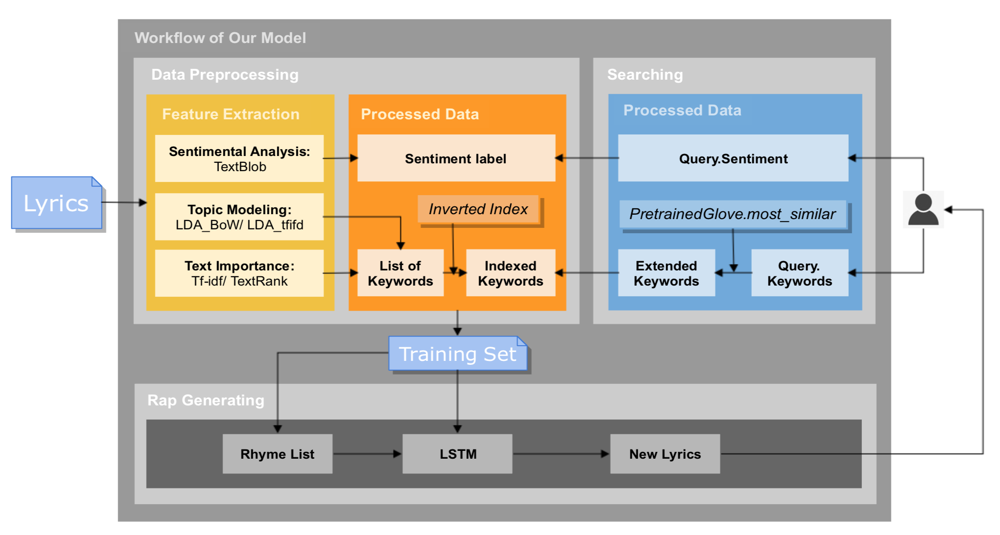

xxxxx
Song Lyrics Generator generates lyrics according to user's given keywords.
DeepBeat get hints from users and then provide existing lyrics related to these hints from different existing songs. They proposed an information retrieval approach to choose training set and employed a multi-layer fully connected neural network and RankSVM algorithm to predict the next line [7].
Compared with existing rap lyrics generators, our product tends to generate new lyrics based on historical works that selected by our information retrieval functions corresponding to the keywords and sentimental preferences provided by users.
Our proposed system combines the knowledge from information retrieval, which limits the training data related to users' requirements, into deep neural network.
The model can be divided into two parts. The first part is to obtain training set of lyrics through skills related to NLP and information retrieval. For each rap lyrics in the collection, we will do keywords selection by tf-idf, TextRank and topic modeling method LDA (Latent Dirichlet Allocation) to extract keywords, and sentimental analysis with existing tools such as NLTK to label the sentiment (negative, neural or positive) of it. So that for the feature selection part, we will record the keywords and sentiment. Then, we plan to adopt tired inverted index to index the lyric documents in collection. For the second part, we need to train a LSTM model to generate new rap lyrics. The training set is collected from the whole dataset through the query from users.